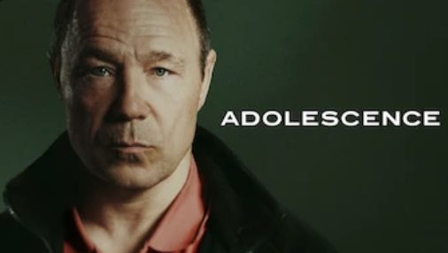
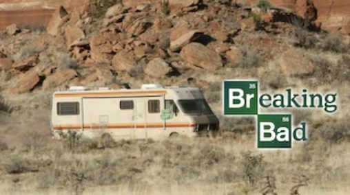
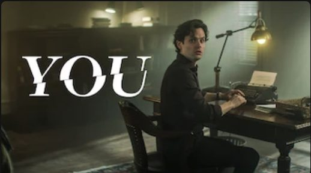
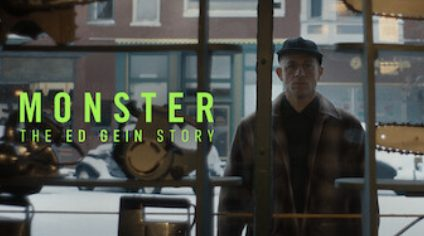

Comparable Titles




Pillango Productions
Would you like to experience the teaser with background music?

“He didn’t take them to hurt them. He took them to keep them.”
A thirteen-year-old boy discovers he was adopted — and begins taking people from his town, keeping them alive in a basement.



